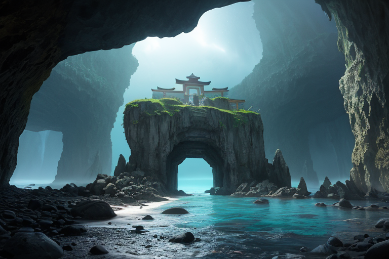
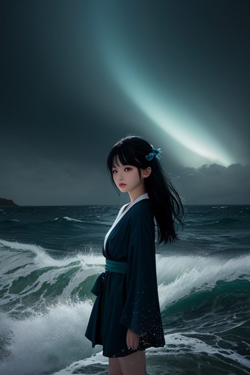
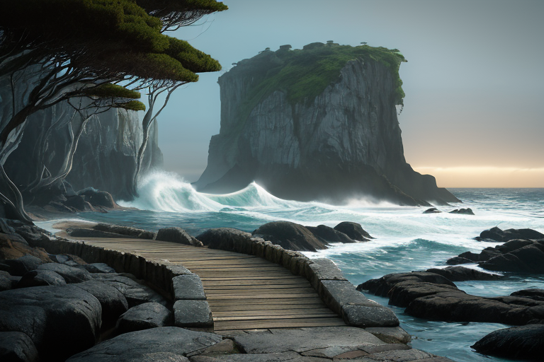
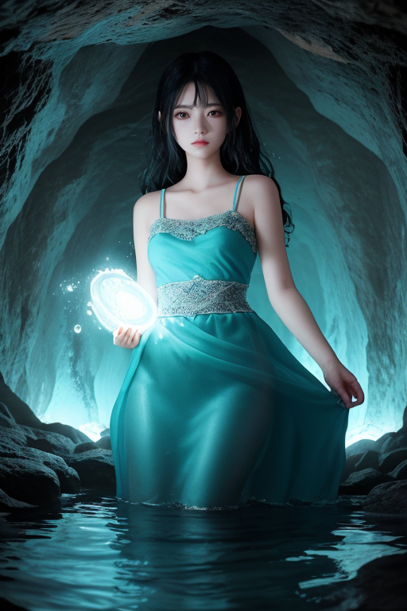

第一章 現実の山口
あなたはまだ気づいていない。この土地にも、王がいることを。
角島大橋は、青い海を真っ二つに切るように延びている。観光客はその美しさに息を呑むが、地元の漁師は、時にこの海峡の潮流が、まるで意志を持つかのように急変することを知っている。それは、何かが封じられているからだ。秋芳洞の奥深く、悠久の時をかけて形成された鍾乳石の陰には、藍と白の微かな光が、潮の満ち干のように脈打っている。ここは「ヤマグチア・リバース」、潮流と変革の王国。その王は、長い眠りについている。
元乃隅神社の123段の朱の鳥居は、荒波打つ断崖の上に並ぶ。賽銭箱は鳥居の頂上に据えられ、人々は願いを込めて硬貨を投げ入れる。その音は、時に、地底深くで封印された潮の鼓動と、かすかに共振する。地元の老人は、萩焼の湯呑みで瓦そばをすすりながら、昔から言い伝えられてきたことを囁く。「この海峡の底には、古い力が眠っとる。動かしたらあかん」。人々はそれを、単なる伝承だと思っている。しかし、それは事実だった。王国の紋章、潮流曲線と変革紋は、歪みの列島を守るため、自らの力を潮封印によって封じていた。すべては、あるべき流れを守るため。

第二章 歪みの兆候
元乃隅神社の123段の朱の鳥居を、潮風が通り抜ける。その風は、いつもより冷たく、重かった。神社の先、断崖の下で砕ける波の音に、微かな不協和音が混じり始めていた。本来、一定のリズムで打ち寄せる波が、時折、意味もなく引いて、不自然な間を置く。潮封印の結界が、かすかに震えている。
「主君、これは……」
潮流精チョウリュウナが、藍と白の衣を翻して現れた。その目は、海峡の彼方、角島大橋がかかる方向を捉えている。
「下関海峡の底の歪みが、活性化しつつある。潮封印が、百年ぶりの大潮と、地殻の微振動に共振している」
王、ヤマグチア・リバースは、錦帯橋の擬宝珠に手を触れ、遠くの波の乱れを感じ取った。この国を守るため自らを封じた力が、封印の中でうごめく。解けば、一時的には歪みを鎮められるかもしれない。だが、その力は制御を失い、新たな、予測不能な流れを生み出す危険がある。松下村塾で志士たちが学んだ「変革」の二文字が、頭をよぎる。変革は常に危険を伴う。流れを変える勇気は、時に、全てを失う覚悟と同義なのだ。

第三章 王の葛藤
角島大橋を渡る風は、潮の香りと共に、封印の内側で渦巻く力を運んでくる。ヤマグチア・リバースは、元乃隅神社の鳥居の列を見つめていた。123基の赤が、海へと続く。ここは、彼が自らの力の大半を「潮封印」に封じ込めた聖域だ。解放すれば、迫り来る海底の歪みを、潮流そのもので押し流せる。だが、その奔流は下関海峡を越え、予期せぬ方角へと変革の波を起こすかもしれない。
「覚悟は？」
主席妖精リヴァナが、波音に混じって問うた。彼女の声には、歴史の転換点で常にあった、危険な熱が宿っている。
「吉田松陰が塾生に問うたように、ですな」
王は答えた。瓦そばの器を思う。熱い出汁は、一度器を離れれば、元の形には戻らない。変革とはそういうものだ。萩焼の茶碗が割れる音が、耳朶で鳴る。解放は破壊を伴う。この静謐な海と、神社の静寂を、自らの手で乱すべきか。
潮が引く。その瞬間、地底で岩盤が軋む、かすかな振動を感知した。彼は目を閉じた。流れを変える勇気は、その流れに溺れる覚悟と背中合わせであることを、この国の志士たちは知っていた。

第四章 妖精との対話
「この封印は、王よ、『静穏』という名の『停滞』です」
リヴァナの声は、秋芳洞の奥底から湧き上がる地下水のように冷たく澄んでいた。彼女は、洞窟の鍾乳石が滴らせる一滴の水を掌に受け止め、見つめた。
「下関海峡の戦い。あの砲煙は、確かに古い流れを断ち切りました。しかし、その反動は、この地の『潮』そのものを、過度に抑制する結果を招いた。私たちは、変革の波を起こす代償として、その波の全てを自らの内に封じ込めたのです」
チョウリュウナが、そっと王の袖に触れた。その指先から、維新の志士たちが密議を交わした夜の、張り詰めた空気が伝わってくるようだった。
「錦帯橋は五連のアーチで流れをくぐります。あれは技術の粋であり、同時に、『流れに逆らわない変革』の象徴でした。しかし今、地盤が求めるのは、もっと根源的な『方向転換』。この封印を解くことは、角島大橋を架けた時のような、決断の時を再び招くことになります」
妖精たちの言葉は、問いを投げかける。流れを変える勇気は、その先に待つ全ての乱れと、静寂の喪失をも引き受ける覚悟と同義なのだと。
第五章 微調整と余韻
王は、元乃隅神社の鳥居が連なる断崖に立った。潮風が、藍と白の衣を揺らす。ここは、123基の鳥居が海へと続く、願いが流れ込む場所だ。彼は目を閉じ、掌に集めた王国の微かな振動を感じ取る。封印は修復された。しかし、完全に元通りではない。自らの意思で触れた裂け目は、ごくわずかながら、新たな「流れ」の始点となってしまった。
代償は、目に見えない形で現れるだろう。地盤の些細な軋み、潮の流れの一寸の変化。それは災厄ではなく、選択の結果としての「ずれ」である。王は、瓦そばの湯気のように立ち上る萩の町並みを見下ろした。変革の志は、常に静寂の一部を削り取る。彼の胸に、初めて「後悔」に似た感情の影が落ちた。しかし、それは覚悟の裏側であった。
潮は満ち、角島大橋を銀色に染めていく。全ては、また微調整の日々へと戻る。ただ、ほんの少し、流れは変わった。
あなたの町にも、王がいる。